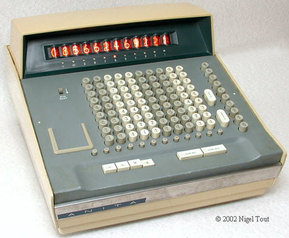

The Personal Solution
In 1961, Control Systems Ltd. released ANITA, the first electronic personal calculator. It used buttons to send signals. It used vacuum and cathode tubes to do math.

A large-scale computer named ENIAC (Electronic Numerical Integrator And Computer) was introduced in 1946. However, personal electronic calcualtors were not available until the 1960's. Development exploded with the advent of transistors in the mid 1960's.
In 1961, Control Systems Ltd. released ANITA, the first electronic personal calculator. It used buttons to send signals. It used vacuum and cathode tubes to do math.
Several transistor-based calculators emerged, introducing several pieces of modern personal computers.
1. Friden EC-130
2. Toscal BC-1411
3. Olivetti Programma 101
The ELKA 22, created by Bulgaria's Central Institute for Calculation Technologies in 1966, was the first calculator to have a square root feature.